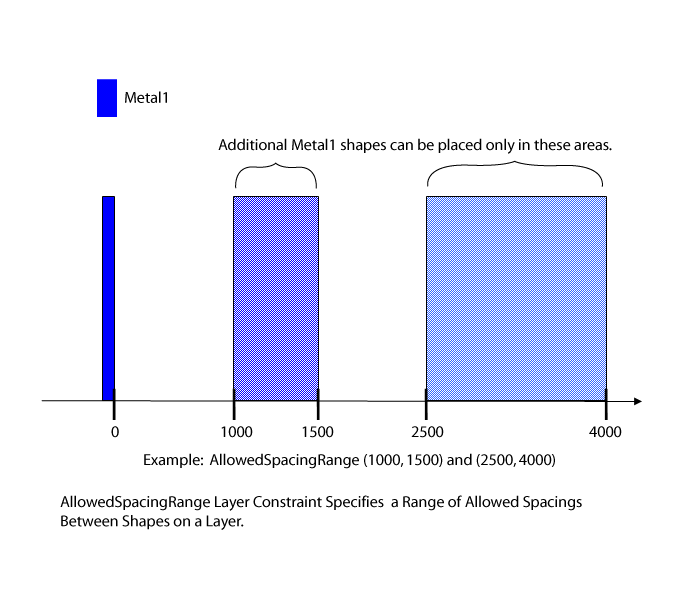

|
 |
 |
||||||
|
|
|
||||||
The oacAllowedSpacingRange layer constraint specifies a range of allowed spacings between shapes on a layer. Spacing can be independent of the width of the shapes, dependent on the width of one of the shapes, or dependent on the width of both shapes. This constraint uses an range array table to represent an array of oaIntRange values. If spacing is dependent on one or both shape widths, the width values are used as the array table lookup key. A single value can be specified for both the upper and lower bounds of the range, which means that the clearance for this range must be precisely the specified value. Multiple allowed ranges and discrete values can be specified.
| Constraint type: | oaLayerConstraint |
| Value types: | oaIntRangeArrayValue, oaIntRangeArray1DTblValue, oaIntRangeArray2DTblValue |
| Database types: | oaTech |
| Object types: | oaAppObject |
The following value types are supported by this constraint:
This value specifies that the spacing is independent of width.
Units: DBU
This value specifies that the spacing is dependent on the width of one of the two shapes
Units: DBU
This value specifies that the spacing is dependent on the width of both shapes.
Units: DBU
The following parameters are supported by this constraint:
| Name | Value Type | Units | Default | Description |
|---|---|---|---|---|
| width oacWidthConstraintParamType |
oaIntValue | DBU | None |
This parameter specifies that the constraint applies when both widths of adjacent shapes are less than the given width value. |
| parallelRunLengthTable oacParallelRunLengthTableConstraintParamType |
oaBooleanValue | Boolean | False (only valid for value types: oaIntRangeArray1DTblValue) |
If this parameter is true, then the index into the 1D table is the parallel run length between two shapes, rather than the width. |

Some foundries define a range of spacings allowed between minimum sized gates in order to facilitate proper insertion of assist or scattering bars. By defining the range of allowed spacings, foundries can ensure that the correct number of scattering bars can be inserted and that the gates print on the mask correctly.
Copyright 2002 - 2010 Cadence Design Systems, Inc.
All rights reserved.